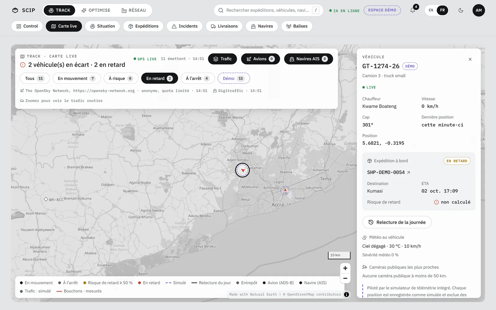
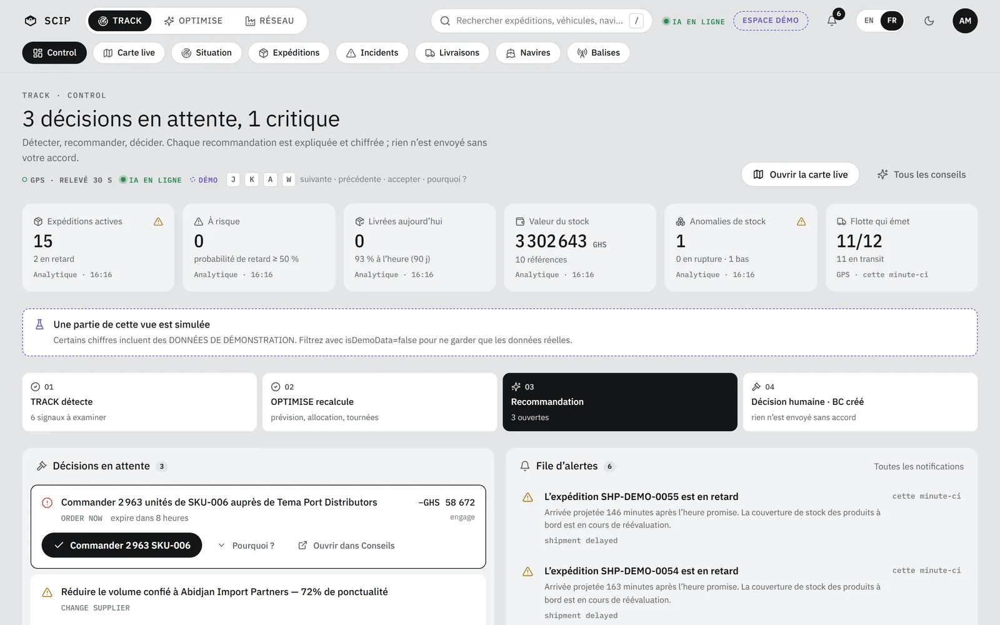

Track · Optimise · Réseau
Logiciel Windows tout-en-un. Track suit la marchandise du fournisseur au client ; Optimise décide quoi commander, chez qui, quand et par quel itinéraire. Tout tourne sur votre PC.

Le film · Le Signal
« Le Signal » met la chaîne logistique en musique : 120 BPM, 85 mesures, 18 scènes. Un retard y est une note à contretemps, et SCIP l’orchestre qui répond.
Ce que fait SCIP
Ce que Track observe, Optimise le transforme en recommandation. Rien n’est envoyé sans votre accord.
Camions, navires, avions, dangers : chaque position sur une carte, chaque retard détecté.
Dix moteurs IA derrière cinq onglets ; chaque recommandation arrive avec ses raisons et ses hypothèses.
Fournisseurs mesurés sur leurs commandes, bons de commande, stocks.
Aucun serveur, aucun abonnement. SCIP répond à ce PC seul par défaut.
Hors ligneFond de carte mondial embarqué de 4 Mo : les six cartes restent lisibles.
InstallationSCIP‑Setup‑0.2.1.exe installe l’application, sa base, son API et son moteur IA.
Track · Control
Détecter, recommander, décider. Chaque recommandation est expliquée et chiffrée ; rien n’est envoyé sans votre accord.

données démo Les libellés et les compteurs sont ceux de l’écran ci-dessus. Au clavier dans Control : J K suivante, précédente · A accepter · W pourquoi ? · / rechercher.